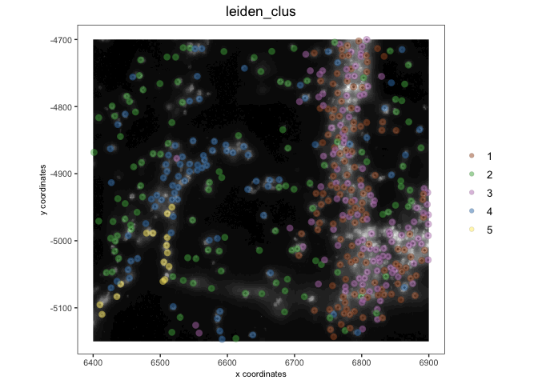

1 Tutorial explanation
Giotto objects contain certain objects that act as pointers to the data that they reference or pull from. While this can help with lowering the amount of memory needed and decrease load times, pointer objects do not save and reload properly when using saveRDS() and readRDS().
Giotto instead implements the saveGiotto() and loadGiotto() functions that collects all the data attached to the object and saves it in a standalone manner. These functions will be demonstrated using a small subset of the Vizgen mouse brain dataset that is easily available through the GiottoData package.
2 Start Giotto
# Ensure Giotto Suite is installed
if(!"Giotto" %in% installed.packages()) {
pak::pkg_install("drieslab/Giotto")
}
library(Giotto)
# Ensure Giotto Data is installed
if(!"GiottoData" %in% installed.packages()) {
pak::pkg_install("drieslab/GiottoData")
}
library(GiottoData)
# Ensure the Python environment for Giotto has been installed
genv_exists <- checkGiottoEnvironment()
if(!genv_exists){
# The following command need only be run once to install the Giotto environment
installGiottoEnvironment()
}3 Create a Giotto object
vizgen <- loadGiottoMini(dataset = "vizgen")4 Show Existing Info
Many analyses were first performed on this mini object to fill it out before it was saved using saveGiotto(). Returning the object gives an overview of its contents.
vizgenThe object also functions as expected. Here we first set the active spatial unit as “aggregate” and then plot the saved leiden clustering results.
activeSpatUnit(vizgen) <- "aggregate"
spatPlot2D(vizgen,
show_image = TRUE,
cell_color = "leiden_clus",
image_name = "dapi_z0",
point_alpha = 0.5)
5 Saving the Object
To save the object, most important inputs are the object to be saved, a directory in which to place the saved object, and the actual folder within that directory to contain Giotto"s files.
The dir param defaults to the working directory, but here I am specifying for the object to be saved to a temporary directory.
saveGiotto(gobject = vizgen,
dir = tempdir(),
foldername = "vizgen")
6 Faster Saving with qs
saveGiotto() defaults to using saveRDS() for its main files, but qs implements faster read and write functions for serialization. Saving using qs is done by passing the param method = "qs".
Note that qs is an additional package that is not installed by default with Giotto but it can be installed with install.packages(qs).
7 Loading the Object
To load the object, only the path to the folder is needed. Additional params of interest are:
-
reconnect_giottoImage-instead of reading from the saved images in the folder- attempts to reconnect the pointer objects based on filepaths that were recorded. This requires that the Giotto object is being loaded on the same system it was generated on and that those images have not been moved. -
python_pathallows a new python path to be set during loading.
test_vizgen <- loadGiotto(path_to_folder = file.path(tempdir(), "vizgen"))
test_vizgen
activeSpatUnit(test_vizgen) <- "aggregate"
spatPlot2D(test_vizgen,
show_image = TRUE,
cell_color = "leiden_clus",
image_name = "dapi_z0",
point_alpha = 0.5)
8 Session Info
R version 4.4.0 (2024-04-24)
Platform: x86_64-apple-darwin20
Running under: macOS Sonoma 14.5
Matrix products: default
BLAS: /System/Library/Frameworks/Accelerate.framework/Versions/A/Frameworks/vecLib.framework/Versions/A/libBLAS.dylib
LAPACK: /Library/Frameworks/R.framework/Versions/4.4-x86_64/Resources/lib/libRlapack.dylib; LAPACK version 3.12.0
locale:
[1] en_US.UTF-8/en_US.UTF-8/en_US.UTF-8/C/en_US.UTF-8/en_US.UTF-8
time zone: America/New_York
tzcode source: internal
attached base packages:
[1] stats graphics grDevices utils datasets methods base
other attached packages:
[1] GiottoData_0.2.13 Giotto_4.0.9 GiottoClass_0.3.2
loaded via a namespace (and not attached):
[1] tidyselect_1.2.1 viridisLite_0.4.2 farver_2.1.2
[4] dplyr_1.1.4 GiottoVisuals_0.2.4 fastmap_1.2.0
[7] SingleCellExperiment_1.26.0 lazyeval_0.2.2 digest_0.6.35
[10] lifecycle_1.0.4 terra_1.7-78 magrittr_2.0.3
[13] dbscan_1.1-12 compiler_4.4.0 rlang_1.1.4
[16] tools_4.4.0 igraph_2.0.3 utf8_1.2.4
[19] yaml_2.3.8 data.table_1.15.4 knitr_1.47
[22] labeling_0.4.3 S4Arrays_1.4.1 htmlwidgets_1.6.4
[25] sp_2.1-4 reticulate_1.37.0 DelayedArray_0.30.1
[28] plyr_1.8.9 RColorBrewer_1.1-3 abind_1.4-5
[31] withr_3.0.0 purrr_1.0.2 BiocGenerics_0.50.0
[34] grid_4.4.0 stats4_4.4.0 fansi_1.0.6
[37] colorspace_2.1-0 ggplot2_3.5.1 scales_1.3.0
[40] gtools_3.9.5 SummarizedExperiment_1.34.0 cli_3.6.2
[43] rmarkdown_2.27 crayon_1.5.2 generics_0.1.3
[46] rstudioapi_0.16.0 reshape2_1.4.4 httr_1.4.7
[49] rjson_0.2.21 stringr_1.5.1 zlibbioc_1.50.0
[52] parallel_4.4.0 XVector_0.44.0 matrixStats_1.3.0
[55] vctrs_0.6.5 Matrix_1.7-0 jsonlite_1.8.8
[58] IRanges_2.38.0 S4Vectors_0.42.0 ggrepel_0.9.5
[61] scattermore_1.2 magick_2.8.3 GiottoUtils_0.1.9
[64] plotly_4.10.4 tidyr_1.3.1 glue_1.7.0
[67] codetools_0.2-20 cowplot_1.1.3 stringi_1.8.4
[70] gtable_0.3.5 GenomeInfoDb_1.40.1 deldir_2.0-4
[73] GenomicRanges_1.56.0 UCSC.utils_1.0.0 munsell_0.5.1
[76] tibble_3.2.1 pillar_1.9.0 htmltools_0.5.8.1
[79] GenomeInfoDbData_1.2.12 R6_2.5.1 evaluate_0.24.0
[82] lattice_0.22-6 Biobase_2.64.0 png_0.1-8
[85] backports_1.5.0 SpatialExperiment_1.14.0 Rcpp_1.0.12
[88] SparseArray_1.4.8 checkmate_2.3.1 colorRamp2_0.1.0
[91] xfun_0.44 fs_1.6.4 MatrixGenerics_1.16.0
[94] pkgconfig_2.0.3